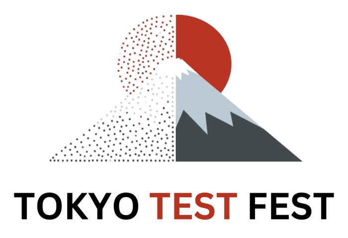

Tokyo Test Fest 2026 · Half-day tutorial

The 70% Problem
Reclaiming Testing’s Intellectual Core with Agentic QCSD
English slidesThe story from QCSD to Agentic QCSD, five hands-on AI agent swarms and the AQE framework from its creator
日本語スライドQCSD から Agentic QCSD へのストーリー、AI エージェントのスウォームを使う5つの演習、考案者による AQE 紹介
Rights and licences
Photo: Ramon Buçard / Unsplash
Slides © 2026 Lalitkumar Bhamare and Dragan Spiridonov. All rights reserved.
Recreating, redistributing or republishing them without consulting both authors is forbidden.